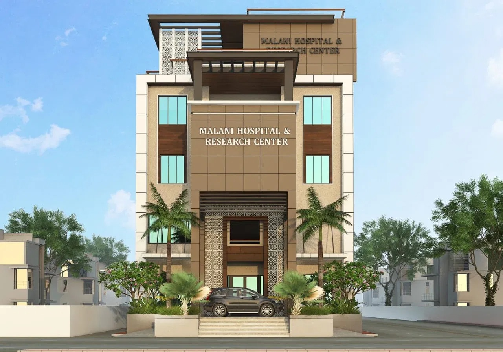

गुड़ामालानी, बाड़मेर की सेवा में — करुणा, विश्वास एवं चिकित्सा उत्कृष्टता के साथ।

वर्ष 2020 से मालाणी हॉस्पिटल गुड़ामालानी एवं बाड़मेर क्षेत्र के परिवारों को गुणवत्तापूर्ण स्वास्थ्य सेवा प्रदान कर रहा है। हमारा नया चार मंज़िला भवन आधुनिक चिकित्सा उपकरणों, विशाल ओपीडी, इन-हाउस डायग्नोस्टिक लैब तथा आरामदायक इनपेशेंट वार्ड्स से सुसज्जित है — ताकि हर मरीज़ को शहर स्तर की सुविधा अपने घर के पास ही मिल सके।
हर मरीज़ के लिए गरिमा, सहानुभूति एवं नैदानिक सटीकता के साथ उपचार — यही हमारी प्राथमिकता है।
हमारे डॉक्टर वर्षों के विशेष नैदानिक अनुभव के साथ सटीक निदान एवं प्रभावी उपचार प्रदान करते हैं।
24 घंटे तैनात एक समर्पित आपातकालीन इकाई यह सुनिश्चित करती है कि जीवन-रक्षक देखभाल हमेशा उपलब्ध रहे।
ऑन-साइट लैब एवं इमेजिंग सेवाएं प्रतीक्षा समय कम करती हैं और तेज़ नैदानिक निर्णय लेने में सक्षम बनाती हैं।
हर मरीज़ के साथ गरिमा, सहानुभूति एवं सम्मान से व्यवहार किया जाता है — क्योंकि अच्छी चिकित्सा की शुरुआत करुणा से होती है।
चार मंज़िला भवन, विशाल गलियारे, लिफ्ट सुविधा एवं व्हीलचेयर-सुगम प्रवेश द्वार।
शहर जैसी सुविधाएं, गाँव जैसी वाजिब कीमतों पर — ताकि गुणवत्तापूर्ण इलाज हर किसी की पहुंच में हो।
हमारी सुविधाओं और टीम के बारे में और जानने के लिए आज ही संपर्क करें।